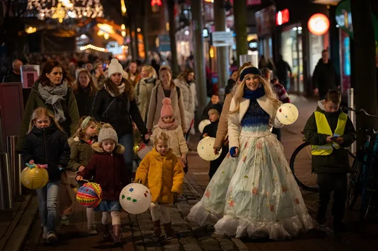
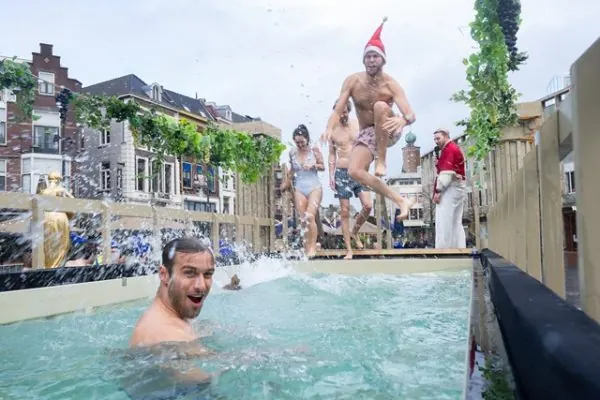

Nieuws ·
Nijmeegse Winterweken Sluiten Spectaculair Af met Vervulde Wensen

De Nijmeegse Winterweken eindigden op een hartverwarmende noot met de wensuitreiking in de Stevenskerk. Gedurende drie weken werden bezoekers ondergedompeld in een wereld van lichtkunstwerken, lokale activiteiten, en een nieuwjaarsduik in een Romeins badhuis. Een van de hoogtepunten was de mogelijkheid om een speciale Winterweken-wens in te dienen.
Een golf van inspirerende en symbolische wensen overspoelde de evenementenorganisatie, variërend van gezondheidswensen tot oproepen voor wereldvrede. Uit de bijna 4.500 wensen werden er uiteindelijk vijf geselecteerd en op zondag vervuld.
De tienjarige Billie bijvoorbeeld, wenste meer financiële ruimte voor zijn moeder. Dit ontroerende gebaar werd beloond met een weekendverblijf in het Hup hotel voor hem, zijn tweelingbroer en moeder. Een andere wens kwam van Dominique, die hoopte dat zijn vader nog één keer naar Frankrijk kon reizen om zijn zus te bezoeken, die hij al meer dan 40 jaar niet heeft gezien. Dit werd mogelijk gemaakt met een reisbudget voor vader en zoons.
Ook oma Ike’s wens voor haar kleinzoon Noud werd werkelijkheid. Hij kreeg de kans om met zijn broertje en oma een dagje naar de Efteling te gaan. Een bijzonder emotioneel moment was er voor een gezin dat twee kinderen verloor bij een auto-ongeluk; zij ontvingen een budget voor een weekendje weg. De laatste wens, ingediend door een vader, was een hoelahoep voor zijn dochter Amélie in haar lievelingskleuren.
Feiten en Cijfers van de Nijmeegse Winterweken
– Hoogtepunt: een 8 meter hoge wensboom in de Stevenskerk.
– 5 vervulde wensen uit duizenden inzendingen.
– 8 majestueuze lichtsculpturen.
– 355 deelnemers aan de Nieuwjaarsduik.
– 600 deelnemers aan de Winter Wonderparade.
– Diverse optredens, waaronder 17 kooroptredens en 12 straattheatervoorstellingen.
– Betrokkenheid van 32 lokale ondernemers met speciale Winterweken-acties.
– 110 dansers van ID Dance.
– Grote deelname aan de lichtjesroute en quizroutes.
– Meer dan 13.000 bezoekers in de Stevenskerk.
– 45.000 wandelaars langs de lichtsculpturenroute.
– 114.836 unieke bezoekers op de IntoNijmegen website in december, mede dankzij de Winterweken.

Toekomstplannen
Na zes succesvolle edities kijken de organisatoren, waaronder Huis voor de Binnenstad, gemeente Nijmegen, en ACBN Evenementenbureau Nijmegen, alweer uit naar de volgende. Nieuwe ideeën zoals een rollerskatebaan, een markt met lokale producten, meer theater en een winters Gevelconcert worden al besproken. Deze wintertraditie blijft de stad Nijmegen levendig houden, zelfs tijdens de koudste maanden.